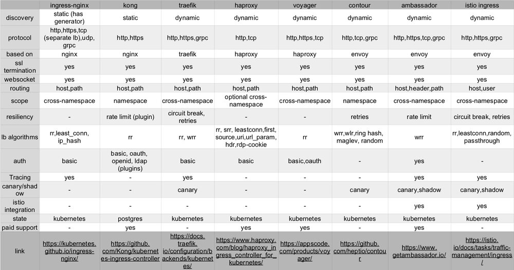

本文为翻译文章，点击查看原文。
据我所知，这是kubernetes可用网关的最完整的列表。从技术上来讲，Ambassador不是ingress，但是它表现地已经非常好了。你可能已经看到了我制作的大表。
下面有个连接可以打开并清晰的看到一个excel表格，包含了图表的详细内容，如果发现不正确的地方，请在文章末尾留言，我将及时修改。

基于这些特点和我自己的经验、从别人的描述和其他相关文章中得知，我尝试着给每一个网关提供了一些选择的参考条件。下面描述先后顺序没有特别含义。
1. ingress-nginx
这可能是最常用的ingress。安全、简单可靠。支持http、https和ssl termination。你可能还想通过它支TCP、UDP，但是从GitHub上提的issue来看，目前你最好别这样做。您可以获得一些良好负载均衡选项以及强大的路由，websocket支持，基础身份认证和追踪。
但是没有动态服务发现有点遗憾。有个配置生成器可以自动生成但还是不太完美。
注意：我们在这里谈论的内容有官方的Kubernetes ingress。还有来自Nginx公司的Ingress有些设置不一样。
2. Kong
绝大多数的人认为Kong只是API网关。它有扩展插件系统使它的功能远远超出了正常ingress该有的功能。我不会使用它去做通用的负载均衡但是如果你想用它做API管理也是一个不错的选择。
3. Traefik
Traefik的功能多的让我惊讶。它的弹性伸缩功能很棒，而且我们从很多博客上可以了解到它运行稳定。如果您当前正在使用ingress-nginx，那么为了让它支持动态配置将是一个很大的升级。事实上，没有理由让我不去用traefik。而且它应该会比现在更加出名。
唯一的缺点是它只支持http、https和grpc。如果你非需要TCP负载均衡，那么您需要选择其他方案了。
4. HAProxy
它是负载均衡算法之王。它似乎也非常适合负载均衡TCP连接。这是官方的HAProxy ingress，在生产环境使用的经验告诉我们它具有极其稳定的记录。如果需要，您还可以获得付费支持订阅。
5. Voyager
Voyager是一个基于HAProxy的Ingress。完美封装了HAProxy并提供了很好的文档说明。我没有看到负载均衡算法的配置位置，所以假设它只是默认为轮询。如果那是错的，请在评论中告诉我，我会更新。
6. Contour
基于Envoy，它有一些更现代的功能，如支持金丝雀部署。它还具有一套良好的负载均衡算法，并支持多种协议。与列出的其他Ingress不同，我从Github那里了解到它仍处于快速发展阶段，有望添加更多功能。
7. Ambassador
如上所述，如果你遵循严格的kubernetes定义，那么这个技术上它并不算是一个Ingress。使用Ambassador您只需简单注释您的服务，它就像一个ingress路由流量。Ambassador有一些非常酷的功能，其他任何一个Ingress都没有像影子流量那样允许您通过镜像请求数据在实时生产环境中测试服务。
Ambassador与Opentracing和Istio很好地集成。
8. Istio Ingress
如果您已经在运行Istio，那么这可能是一个很好的默认选择。它具有Ambassador拥有的一些更现代的功能。它也有故障注入，看起来可能很有趣。然而，Istio目前在这个领域做了很多工作，并且已经从Ingress转向Gateway。因此，如果您正在寻找每5秒钟没有发生变化的Ingress，您可能仍然需要考虑Ambassador。
总结
这里没有明显的赢家，因为你需要根据你的需求选择合适的Ingress。目前没有某一个Ingress可以做到这一切。
我建议您使用Ambassador。如果您只是运行标准的基于http的微服务并且喜欢了解技术前沿，那么你应该毫不犹豫的选择Istio，Ambassador和Jaeger。